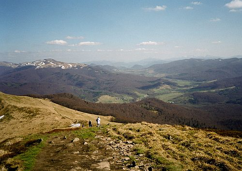

Bieszczady
grupa dwóch pasm górskich w łańcuchu Karpat. Pasma Bieszczadów znajdują się między Przełęczą Łupkowską (640 m n.p.m.) a Przełęczą Wyszkowską (933 m n.p.m.). Najwyższy szczyt Bieszczadów to Pikuj (1405 m n.p.m., na Ukrainie) zaś na terytorium Polski – Tarnica (1346 m n.p.m.). Dzielą się na: Bieszczady Zachodnie (na terenie Polski i Ukrainy), Bieszczady Wschodnie (na terenie Ukrainy). Bieszczady należą do Beskidów Wschodnich, które są częścią Zewnętrznych Karpat Wschodnich. Mimo iż szczytowe partie zajmują połoniny, Bieszczady zaliczane są do pasma Beskidów Lesistych, a nie Połonińskich.
